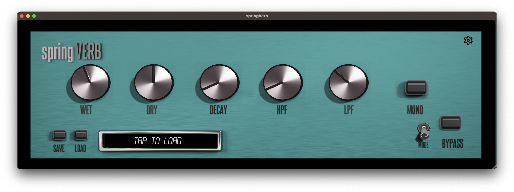
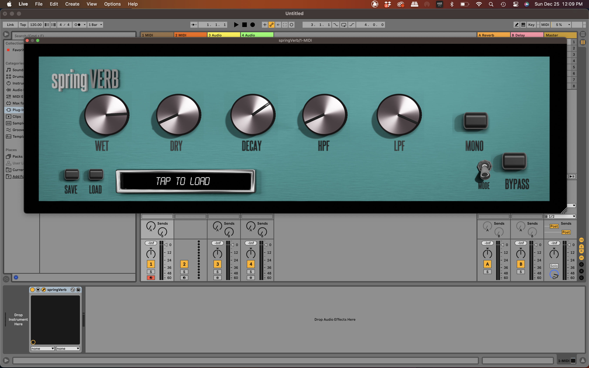

springVerb is a macOS, Windows, and soon to be iOS compatible stereo multi-mode spring reverb. Designed for VST3, AU, AUv3, and stand-alone use.
Spring reverb has a long history, making debut on organ sounds and really getting noticed when being built into some of the most famous guitar amps known to man. In today's musical world, spring reverb is now pretty much used on anything that could use just a touch of ambience.
springVerb is packed with 3 spring modes to give you a wide range of sounds to bring to your mix. The included Highpass Filter, Lowpass Filter, and controllable Decay, help springVerb use on any source.
All settings can be saved and loaded in your sessions as well as crossplatform presets. All parameters offer automation control to get the most expressive sound.
RedSprings A full body big spring sound. Turn down the decay for a classic touch of spring, or crank it to 10 and let the spring go wild for massive ambience. DigiSprings A slightly smaller spring compared to RedSpring, with a less intrusive sound great for adding subtle touches of space to your source. CaliSprings: Traditional guitar-amp based spring reverb with twang you'd expect. This sound includes a guitar cabinet which can add an interesting flavor to your sounds. This one is particularly designed with guitar players in mind. Decay does not affect CaliSprings

